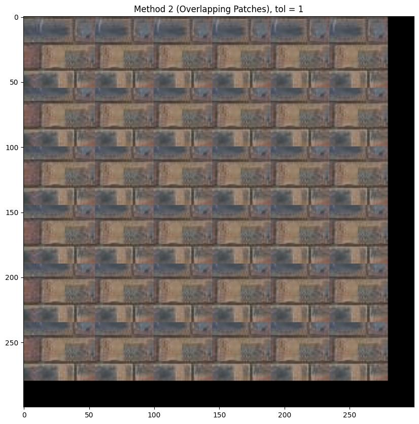
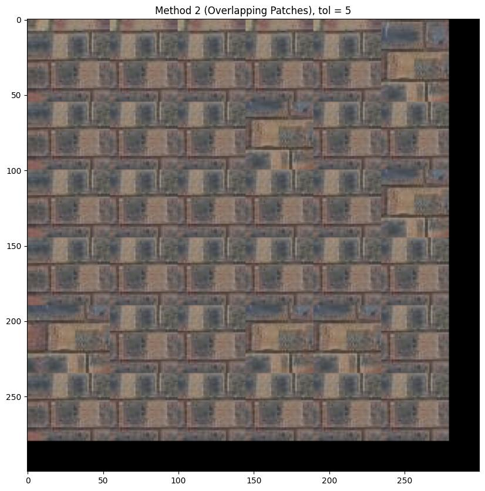
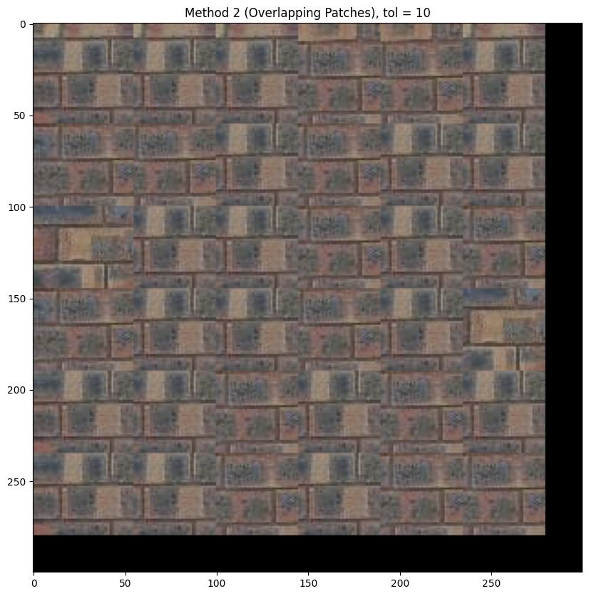
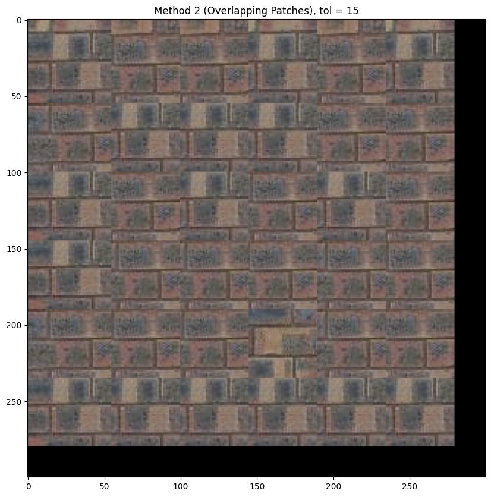

CS Final Project
Carolyn Wang
Final Project 1: A Neural Algorithm of Artistic Style
1. Shoot and digitize pictures
I started off with these two photos:
2. Recover homographies

Final Project 2: Image Quilting
Method 1: Randomly Sampled Texture
out_size = 200
patch_size = 15
Original Image

Random Generation Run 1

Random Generation Run 2

Method 2: Overlapping Patches
out_size = 300
patch_size = 55
overlap = 10
Original Image
tol = 1

tol = 2

tol = 5

tol = 10

tol = 15
